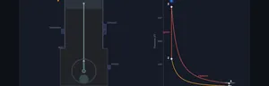
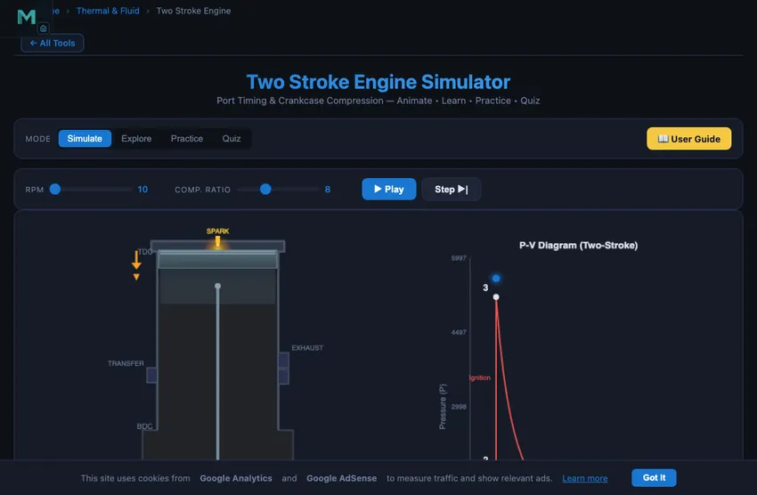

Two Stroke Engine Simulator
3D Model — Two Stroke Engine Simulator
Interactive two-stroke petrol engine simulator with port timing, piston animation, and live PV diagram. Visualize intake, compression, power, and exhaust. Try free!
Port Timing & Crankcase Compression — Animate • Learn • Practice • Quiz
1 Overview
The Two Stroke Engine Simulator visualises the complete two-stroke cycle with animated port timing, piston motion, and a live PV diagram. Unlike four-stroke engines, the two-stroke completes a power cycle in just one crankshaft revolution (360°), using ports instead of valves and crankcase compression to manage gas exchange.
You will see how the intake port, transfer port, and exhaust port are uncovered and covered by the piston as it moves, and understand the scavenging process where fresh charge pushes out exhaust gases. The simulator clearly shows the simultaneous events happening above and below the piston.
2 Configuring the System

- Adjust the RPM slider to control animation speed.
- Change the Compression Ratio (6:1 to 12:1) to see its effect on pressure and efficiency.
- Click Play for continuous animation or Step to advance through phases one at a time.
- The canvas shows the engine cross-section with ports, piston, and crankcase alongside a live PV diagram.
- Readout cards display current phase, crank angle, pressure, temperature, efficiency, and port status.
3 Running the Cycle
The engine animation shows three ports in the cylinder wall that are opened and closed by piston position. During the upstroke: the charge above the piston is compressed while fresh mixture is drawn into the crankcase through the intake port. During the downstroke (power stroke): combustion drives the piston down, the exhaust port opens first for blowdown, then the transfer port opens for scavenging as crankcase-compressed charge enters the cylinder.
The Port Status readout shows which ports are currently open or closed. The PV diagram traces the thermodynamic cycle with the enclosed area representing net work output per cycle.
4 The Underlying Theory
Study concepts across four categories: Fundamentals (two-stroke cycle, crankcase compression, scavenging), Ports & Timing (port geometry, timing diagram, port opening angles), 2-Stroke vs 4-Stroke (power output, efficiency, emissions, applications), and Performance (trapping efficiency, delivery ratio, scavenging efficiency).
5 Try a Problem
Practice generates problems on port timing, scavenging efficiency, power output comparisons, and thermodynamic calculations. Quiz provides 5 randomised questions from a pool of 15.
6 Engineering Notes
- Use Step mode to freeze at the moment when transfer and exhaust ports are simultaneously open — this is where short-circuiting occurs.
- Two-stroke engines produce a power stroke every revolution (vs every two revolutions for four-stroke), giving them higher power-to-weight ratio.
- The exhaust port opens before the transfer port — this blowdown period is essential for reducing cylinder pressure before scavenging begins.
- Lower compression ratios (6-10) are typical for two-stroke petrol engines compared to four-stroke engines.
- Watch how the crankcase acts as a pump — it draws in fresh charge on the upstroke and compresses it on the downstroke.
How a Two-Stroke Engine Works — Interactive Port-Timing Simulator

The two-stroke engine completes an entire power cycle in just one revolution of the crankshaft (360°), producing one power stroke per revolution compared to the four-stroke engine’s one power stroke every two revolutions. This gives two-stroke engines a higher power-to-weight ratio, making them popular in chainsaws, outboard motors, motorcycles, and small power tools. However, this comes at the cost of lower fuel efficiency and higher emissions due to the overlap between intake and exhaust processes.
Understanding Port Timing in Two-Stroke Engines
Unlike four-stroke engines that use mechanically operated valves, two-stroke engines use ports—openings in the cylinder wall that are covered and uncovered by the piston as it moves. There are three main ports: the intake port (admits fresh air-fuel mixture into the crankcase), the transfer port (connects crankcase to cylinder), and the exhaust port (releases burnt gases). The timing of port opening and closing is determined by piston position and port placement on the cylinder wall.
Crankcase Compression
A unique feature of the two-stroke petrol engine is crankcase compression. As the piston moves upward during compression, it creates a partial vacuum in the sealed crankcase, drawing fresh air-fuel mixture through the intake port. When the piston descends during the power stroke, this mixture is slightly compressed in the crankcase and then transferred to the cylinder through the transfer port, pushing out (scavenging) the exhaust gases.
Scavenging and Short-Circuiting
Scavenging is the process of replacing burnt gases with fresh charge. In a two-stroke engine, the exhaust and transfer ports are open simultaneously for a brief period, which can cause short-circuiting—fresh charge escaping directly through the exhaust port. Modern two-stroke engines use shaped piston crowns, tuned exhaust systems, and direct fuel injection to minimize this loss.
Why Two-Strokes Are More Powerful Per Litre — And Why That Doesn’t Win
Same displacement, twice the firing rate. A 250 cc two-stroke produces as many power strokes per second as a 500 cc four-stroke at the same RPM. So in principle, a two-stroke could be twice as powerful for the same engine size and mass. In practice it gets close to that on dirt bikes, racing kart engines, and chainsaws — the power-to-weight ratio is genuinely excellent.
The catch is everything else. Two-strokes lose 20−30 % of fresh charge straight out the exhaust port during the brief overlap when both ports are open. That fuel just goes out as unburnt hydrocarbon. They burn oil mixed into the fuel as a deliberate lubrication strategy, which means the exhaust always has some blue smoke. They have no separate intake stroke, so volumetric efficiency is poor. Net result: thermal efficiency around 20−25% versus 30−35% for a comparable four-stroke. The four-stroke wins on fuel economy and emissions easily, and as those mattered more, two-strokes lost market share.
The Scavenging Problem — The Single Biggest Engineering Challenge
In a four-stroke engine, the exhaust stroke pushes burnt gases out, then the intake stroke pulls fresh charge in — clean separation. In a two-stroke, both happen simultaneously while the piston is near bottom dead centre. Fresh charge enters through the transfer port; exhaust leaves through the exhaust port; some fresh charge inevitably follows the exhaust out (short-circuit loss).
Three design approaches try to fix it, each with trade-offs:
- Loop scavenging. Transfer ports angled upward so fresh charge sweeps up the cylinder before turning toward the exhaust. The Schnürle design (DKW, 1932) made this the standard for petrol two-strokes.
- Cross-flow scavenging. Piston has a deflector hump that directs fresh charge upward. Simple but inefficient; rarely used now.
- Uniflow scavenging. Fresh charge enters one end, exhaust exits the other. Used in large two-stroke marine diesels (Wartsila, MAN-B&W). Combined with direct injection, achieves 50%+ thermal efficiency — better than any four-stroke.
Where Two-Strokes Are Still the Right Choice
| Application | Why two-stroke wins |
|---|---|
| Chainsaw, leaf blower, brush cutter | Weight matters more than fuel economy; can run in any orientation |
| Outboard boat motor (small) | Power-to-weight, simpler construction |
| Motocross dirt bike (legacy) | Light weight, broad powerband, simple maintenance |
| Large marine diesel (container ships) | Uniflow scavenging + direct injection gives the highest thermal efficiency available |
| Model aircraft engines (glow plug, 0.5−10 cc) | Power-to-weight, simple lubrication via fuel mixture |
What Killed Petrol Two-Strokes for Road Use
European emission standards (Euro 1 in 1992, Euro 2 in 1996) effectively banned petrol two-stroke road motorcycles. The unburnt hydrocarbon and lubricant smoke could not be cleaned up at any practical cost. By 2000 the petrol two-stroke had disappeared from car-class engines (the last was the Trabant 601), and by 2010 from road motorcycles in Europe. Tools and small off-road engines persist because their use is brief and well-ventilated, but even there four-stroke equivalents are increasingly common.
The marine diesel two-stroke is the survivor. With direct injection bypassing the scavenging-loss problem, and at hundreds-of-MW power scale where thermal efficiency drives fuel cost, the two-stroke uniflow diesel is unbeaten. The engine in a large container ship is two-stroke, low-speed (100 rpm), direct-coupled to the propeller, and runs on heavy fuel oil at 50%+ efficiency.
References
- Heywood, J. B. — Internal Combustion Engine Fundamentals, 2nd ed., Chapter 7 (Two-Stroke Engines).
- Blair, G. P. — Design and Simulation of Two-Stroke Engines, SAE. The reference for two-stroke designers.
- MAN Energy Solutions / Wartsila marine engine documentation — for the modern large-bore uniflow diesel.
Explore Related Simulators
If you found this two-stroke engine simulator helpful, explore our Four Stroke Engine Simulator, Thermodynamics Simulator, Heat Transfer Simulator, and Flywheel Energy Simulator for more hands-on practice.